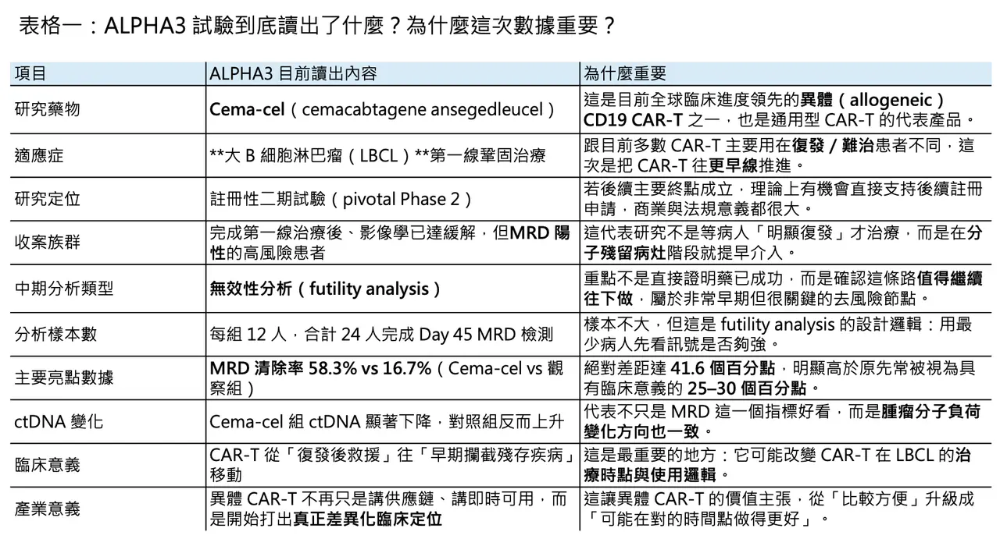
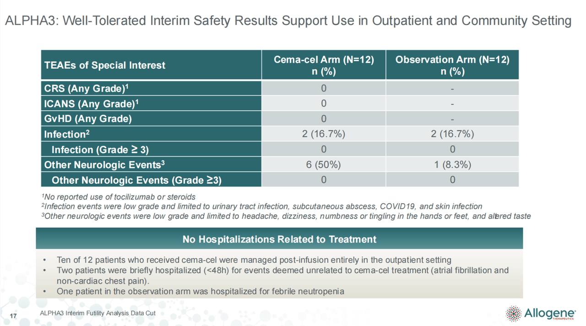
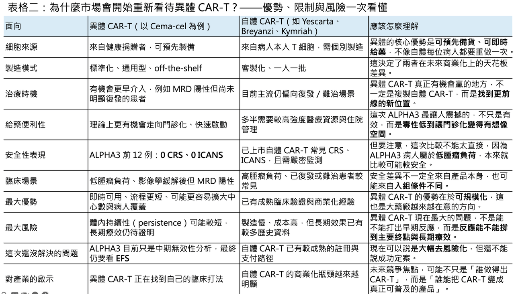

異體 CAR-T 的歷史性一跳：Cema-cel 為什麼可能是細胞治療真正走向成藥的分水嶺
當市場還在用過去十年對自體 CAR-T 的理解框架看細胞治療時，異體 CAR-T 其實已經悄悄走到一個更關鍵的節點。2026 年 4 月 13 日，Allogene Therapeutics 公布了 pivotal Phase 2 ALPHA3 試驗的中期無效性分析：在第一線鞏固治療的大 B 細胞淋巴瘤（large B-cell lymphoma, LBCL）病人中，接受 cemacabtagene ansegedleucel（cema-cel）的病人，Day 45 的微小殘留疾病（minimal residual disease, MRD）清除率達 58.3%，而觀察組只有 16.7%；更值得注意的是，cema-cel 組同時出現 97.7% 的 ctDNA 中位數下降，且沒有 cytokine release syndrome（CRS）、沒有 immune effector cell-associated neurotoxicity syndrome（ICANS）、沒有 graft-versus-host disease（GvHD），也沒有治療相關嚴重不良事件。10 位病人全程門診完成治療，另外 2 位短暫住院，事件也都被判定與 cema-cel 無關。幾天後，公司又宣布 ALPHA3 將從北美擴展到南韓與澳洲，整體試驗站點將超過 80 個。這不是一般意義上的「早期數據不錯」，而是異體 CAR-T 第一次在一個真正有機會改寫治療路徑的位置，打出足以讓全球都停下來看的訊號。
分享這篇分析
把這篇文章轉給關注生技醫藥、公司研究或資本市場的朋友。
資本市場也立刻做出反應。數據公布當天，Allogene 股價明顯急漲；但公司隨後在 4 月 13 日提出、4 月 14 日定價 1.75 億美元普通股增資後，股價又回吐部分漲幅。這個走勢很值得玩味：市場承認 ALPHA3 的訊號有分量，但也同時提醒所有人，從一份漂亮的中期無效性分析，到真正足以支撐 BLA 的註冊性價值，中間還隔著樣本擴大、主要終點驗證、製造與執行風險。
🔹01｜這件事厲害的地方，不只是數字漂亮，而是治療時點被改寫了

cema-cel 最重要的地方，不只是它是異體、不是自體；而是 Allogene 找到了一個過去 CAR-T 幾乎沒有真正站穩的位置：在明顯影像學復發之前，先對高風險殘留病灶出手。ALPHA3 不是等病人 PET/CT 已經明確復發後，再把 CAR-T 當成救援武器；它是在病人完成第一線化學免疫治療後，透過 ctDNA-based MRD 檢測抓出仍有分子層級殘留疾病、但尚未明顯復發的高風險族群，然後在這個窗口提早介入。Allogene 自己甚至把這個策略描述成有機會成為第一線治療之後的「第七個週期」。
這點非常關鍵。因為目前已上市、用於 LBCL 的自體 CD19 CAR-T，雖然已經比早期更前移，但核心使用場景仍然是復發／難治。Yescarta（axicabtagene ciloleucel）與 Breyanzi（lisocabtagene maraleucel）已核准用於對第一線 chemoimmunotherapy 原發難治或 12 個月內復發的病人；Kymriah（tisagenlecleucel）則仍主要落在兩線以上系統治療後的復發／難治 LBCL。也就是說，現有自體 CAR-T 仍大多是在「臨床上已經看見問題」之後才啟動，而 ALPHA3 是在「影像學看起來還不一定壞，但分子層級已經發出警訊」時先出手。這不是把 CAR-T 往前挪一步而已，而是把整個治療邏輯從「救援」改成「攔截」。
更重要的是，這個邏輯不是空想。近年的 LBCL 研究已經反覆指出，治療結束時若 ctDNA-MRD 仍可偵測，病人的後續進展風險顯著升高，而且其預後分層能力可能比傳統 PET 影像更強。換句話說，MRD 陽性並不是一個「研究型指標」而已，它越來越像是復發前最後一次可以主動改變命運的窗口。ALPHA3 的創新，正是把這個窗口從「監測工具」變成「治療觸發器」。
🔹02｜為什麼只有 12 位對 12 位，市場卻這麼在意？

很多人第一眼看到資料，直覺會問：每組只有 12 位病人，真的能看嗎？
答案是，要先看這份資料回答的是什麼問題。ALPHA3 這次公布的不是中期療效分析，而是中期無效性分析。所謂 futility analysis，本質上不是要證明「藥已經成功」，而是要回答「這個試驗還值不值得繼續跑下去」。它的邏輯是：在最早的時間點，用最少的病人，先確認藥物有沒有跨過一個足夠有意義的訊號門檻。如果連這個門檻都過不了，後面再花更多時間、更多資源、更多病人，意義就很低。ALPHA3 的觸發條件，就是第 24 位隨機分派病人完成 Day 45 的 MRD 評估。
也因此，真正該看的不是「12 個人很多還是很少」，而是「它打出的差值夠不夠大」。Allogene 這次給出的答案是：cema-cel 組 MRD 陰轉率 58.3%，觀察組 16.7%，絕對差距 41.6 個百分點；而公司事前引用文獻所設定、具有臨床意義的門檻，是 25–30 個百分點。也就是說，這不是剛好跨線，而是明顯超線。再加上 ctDNA 變化方向高度一致：cema-cel 組中位數下降 97.7%，觀察組反而上升 26.6%。對一個 futility readout 來說，這種幅度已經足以讓市場嚴肅看待。
還有一個常被忽略的細節是，這批隨機進入試驗的病人，並不是 cema-cel 組基線條件比較漂亮。相反地，在這個小樣本裡，cema-cel 組數值上反而有更多 stage III–IV、較高 IPI 分數、以及 double-hit 特徵。這當然還不能被解讀成正式的基線平衡結論，但至少它降低了「只是因為試驗組剛好抽到比較好病人」這種最直覺的質疑。
🔹03｜真正超預期的，可能是安全性，而不是 MRD

如果只看 headline，多數人第一時間會被 58.3% vs 16.7% 的 MRD 清除率吸走注意力；但細看整份資料，真正讓這個領域起雞皮疙瘩的，可能是安全性。
因為對 CAR-T 來說，CRS 與 ICANS 不是邊角料，而是商業化、中心擴張與治療場景能否前移的核心約束。ALPHA3 這次前 12 位接受 cema-cel 的病人，CRS 0 例、ICANS 0 例、GvHD 0 例、治療相關嚴重不良事件 0 例；10 位全程門診，2 位短暫住院，但都不是治療相關事件。再加上約三分之一的篩檢與輸注活動已經來自社區癌症中心，甚至包括先前幾乎沒有 CAR-T 經驗的站點，這代表 cema-cel 若後續仍維持相似安全譜，意義將不只是「毒性比較低」，而是它可能真的把 CAR-T 從少數大型中心的高複雜度程序，推向更接近標準化、可複製、甚至可門診執行的治療。
不過，這裡一定要講一句公道話：不能直接把 ALPHA3 的安全性，拿去跟所有自體 CAR-T 頭對頭比較，然後得出產品絕對優劣的結論。因為適應症場景真的不同。ALPHA3 收的是完成第一線治療後、影像學多半已達 CR 或 PR、但 MRD 陽性的低腫瘤負荷病人；而像 ZUMA-12 這類第一線前移研究，收的是高風險、PET 陽性、仍有明顯活動性疾病的病人。ZUMA-12 中，grade 3 以上 CRS 為 8%，grade 3 以上神經學事件為 23%。這些毒性差異，一部分當然可能來自產品本身，但另一部分也很可能來自病人負荷與治療時點不同。低腫瘤負荷，本來就比較有機會換到更乾淨的毒性曲線。
也就是說，ALPHA3 的安全訊號不能被粗暴解讀成「異體一定比自體安全」，但它至少告訴市場另一件更有價值的事：當 CAR-T 被放到對的病人、對的時間點、對的疾病負荷條件下，它的臨床可操作性可能會完全改觀。這對整個產業的意義，甚至可能大過單一產品本身。
🔹04｜風險其實還遠遠沒有解除

這份資料再漂亮，也還不到可以開香檳的程度。
第一個原因很直接：ALPHA3 真正的主要終點不是 Day 45 的 MRD 陰轉，而是 event-free survival（EFS）。公司目前的規劃是，ALPHA3 預計收案約 220 位病人，2027 年年中進行 EFS 的 interim analysis，2028 年年中完成 primary EFS analysis。換句話說，現在的訊號最多只能說明「這條路非常值得繼續跑」，但還不能說「這條路一定通往註冊成功」。如果後續 MRD 陰轉不能順利轉化成 EFS 改善，現在看到的漂亮早期數據，仍可能只是前哨站的煙火。Allogene 自己也在官方說明中明白提醒：早期、小樣本資料不一定能預測後續或最終結果。
第二個核心風險，仍然是異體 CAR-T 的老問題：持續性（persistence）到底夠不夠？在先前 ALPHA／ALPHA2 研究裡，cema-cel 的 CAR-T 擴增與持續可觀察到最長約 4 個月，但有些達成完全緩解（CR）的病人，反應持續時間中位數卻可達 23.1 個月。這代表異體 CAR-T 的臨床邏輯，可能不一定像很多人原本以為的那樣，必須要長時間駐留體內才有辦法換到長期療效；它更可能是在一段有限的時間內，完成對殘餘腫瘤克隆的快速清除，之後由疾病本身的低負荷狀態與宿主免疫重塑共同維持緩解。這個推論對 ALPHA3 特別重要，因為 ALPHA3 面對的是極低腫瘤負荷場景，在這種情況下，即使異體 CAR-T 的持續時間未必像自體產品那樣長，也可能已經足夠完成任務。只是，這目前仍然是推論，不是結論。
第三個風險則是執行面。ALPHA3 現在之所以令人興奮，一部分是因為它站在一個非常聰明的臨床設計上：MRD 導引、低負荷病人、即時可用、可望門診化。問題在於，這個模式要真正走向成藥，不只需要數據成立，還需要檢測流程、站點協作、病人篩選、細胞供應鏈與社區中心訓練都能跟上。細胞治療從來不只是「藥有沒有效」，而是「整個系統能不能把這個藥穩定地做出來、送到病人手上、並且把風險控住」。ALPHA3 現在看起來有機會，但還在驗證路上。
🔹05｜這不只是 Allogene 的好消息，也是台灣細胞治療敘事的壓力測試
如果只把 ALPHA3 當成 Allogene 的股價題材，那其實看得太淺。對台灣市場來說，它更像是一記直接打在產業敘事上的重拳。
因為這份資料真正宣告的，不只是某一個異體 CAR-T 有希望，而是全球大藥廠押注的方向，正在越來越明確地從「客製化自體製程」轉向「可規模化的下一代細胞治療平台」。今年 2 月，Eli Lilly 宣布收購 Orna Therapeutics，押的是 in vivo cell engineering 與 in vivo CAR-T；4 月，Lilly 又宣布收購 Kelonia Therapeutics，進一步加碼 in vivo CAR-T。再往前看，AstraZeneca 在 2025 年收購了 EsoBiotec，AbbVie 也在 2025 年收購 Capstan Therapeutics，兩者押的同樣都是體內工程化、縮短流程、放大可近性的下一代路線。這些交易的共同語言不是「再做一個地區版自體 CAR-T」，而是「如何把細胞治療從一次只能服務少數病人的高摩擦程序，變成真正可以擴張的產品平台」。
這也是為什麼，我對台灣自體 CAR-T 敘事一直抱持高度保留。不是說自體 CAR-T 沒有科學價值，而是它的商業化瓶頸，本來就有很大一部分是結構性的，不是單靠工程優化就能輕易解掉的。現行自體 CAR-T 的標準流程，仍是採集病人 T 細胞、體外基因工程化、擴增、品質檢測，再回輸病人；光製造本身通常就要 3–6 週，實際從採細胞到回輸的 vein-to-vein 時間往往更長，常見周轉區間約 16–33 天，而且只要中間任何一段出問題，整體時程還會再往後拖。至於成本，已上市 CAR-T 在歐美的價格本來就是數十萬美元等級。這些都不是「再努力一點」就能完全消失的摩擦。
所以，若今天台灣還有公司想把「我們也能做一個自體 CAR-T」包裝成巨大估值故事，我會非常保留。原因不複雜：在全球市場上，LBCL 與多發性骨髓瘤等主力自體 CAR-T 賽道，早已由 Kite/Gilead、Bristol Myers Squibb、Novartis、Johnson & Johnson/Legend 等國際玩家建立臨床、製造、支付與通路壁壘。台灣公司若沒有顯著優於國際同業的臨床定位、CMC 能力、製程成本結構、給藥場景創新，或明確區域市場策略，海外 BD 的空間恐怕非常有限。這不是說台灣一定做不起來，而是如果投資論述還停留在「台灣也有 CAR-T 概念股，所以一定有夢」，那很可能是把產業競爭想得太簡單。
更現實的是，當國際成熟產品與新一代平台未來在亞洲的可近性持續提升，本土以自體製造為核心的公司，只會面臨更直接的估值壓力。對台灣投資人而言，真正需要分辨的，不是「有沒有 CAR-T 題材」，而是這家公司站在哪一條曲線上：是卡在上一代高成本、慢週期、難擴張的自體流程裡；還是已經在往異體、門診化、甚至 in vivo 的方向移動。前者可以有技術故事，但很難有全球平台故事；後者才比較接近大藥廠願意用真金白銀下注的方向。
🔹結語｜ALPHA3 不是終點，但它可能是異體 CAR-T 真正開始被重新定價的起點
ALPHA3 最重要的，不只是告訴市場 cema-cel 可能有效，而是它示範了一件過去很多人只停留在簡報上的事：異體 CAR-T 的勝負手，未必是去正面複製自體 CAR-T 在後線高腫瘤負荷病人的打法，而是要找到一個更早、負荷更低、流程更快、可望更安全的臨床窗口。
換句話說，Allogene 這次打開的，不只是自己的一扇門，而是整個異體 CAR-T 領域的一條路。這條路的核心，不再只是「off-the-shelf 比較方便」，而是「off-the-shelf 是否能在對的時間點，做成真正更好的治療決策」。如果 2027 年的 EFS interim analysis 仍然站得住，市場回頭看 2026 年 4 月這次中期無效性分析，很可能會把它視為異體 CAR-T 從概念股邁向成藥敘事的關鍵轉折點。至於現在，最合理的判斷不是宣告勝利，而是承認一件事：這個領域，真的開始有那個味道了。
參考資料：
- [0]: 各公司官網＆公開資料
- [1]: "Allogene Therapeutics Reports Interim Futility Analysis from Pivotal ALPHA3 Trial Showing 58.3% MRD Clearance with Cemacabtagene Ansegedleucel (Cema-Cel) vs. 16.7% in Observation Arm in First-Line Consolidation LBCL | Allogene Therapeutics"
- [2]: Allogene Therapeutics stock surges 36% on trial data By Investing.com Allogene Therapeutics stock surges 36% on trial data www.investing.com
- [3]: BREYANZI | FDA BREYANZI (lisocabtagene maraleucel) is a new cell-based #GeneTherapy treatment for adult patients with relapsed or refractory of certain types of large-B-cell #lymphoma. www.fda.gov
- [4]: Remission Assessment by Circulating Tumor DNA in Large B-Cell Lymphoma PURPOSELarge B-cell lymphomas (LBCLs) are curable, but patients with residual disease after therapy invariably experience progression. Ultrasensitive methods to detect circulating tumor DNA (ctDNA) as minimal residual disease (MRD) may improve the ...Impr ascopubs.org
- [5]: Axicabtagene ciloleucel as first-line therapy in high-risk large B-cell lymphoma: the phase 2 ZUMA-12 trial High-risk large B-cell lymphoma (LBCL) has poor outcomes with standard first-line chemoimmunotherapy. In the phase 2, multicenter, single-arm ZUMA-12 study (ClinicalTrials.gov NCT03761056) we evaluated axicabtagene ciloleucel (axi-cel), an autologous anti pubmed.ncbi.nlm.nih.gov "Axicabtagene ciloleucel as first-line therapy in high-risk large B-cell lymphoma: the phase 2 ZUMA-12 trial - PubMed"
- [6]: Allogeneic Chimeric Antigen Receptor T-Cell Products Cemacabtagene Ansegedleucel/ALLO-501 in Relapsed/Refractory Large B-Cell Lymphoma: Phase I Experience From the ALPHA2/ALPHA Clinical Studies PURPOSEOff-the-shelf, allogeneic CD19 chimeric antigen receptor (CAR) T-cell products may improve access to treatment versus autologous ones. We report the phase I experience of the allogeneic CD19 CAR T-cell product cemacabtagene ansegedleucel (cema-cel) ascopubs.org
- [7]:
- [8]: www.sciencedirect.com https://www.sciencedirect.com/science/article/abs/pii/S2352302624002734 www.sciencedirect.com
引用本文
若在簡報、報告或社群討論引用，建議附上 Drugnews 原文連結。
Drugnews 編輯部，〈再見自體CAR-T，台灣的泡沫也該破了〉，Drugnews｜藥時事，2026/04/27，https://drugnews.com.tw/articles/2026-04-27-car-t.html